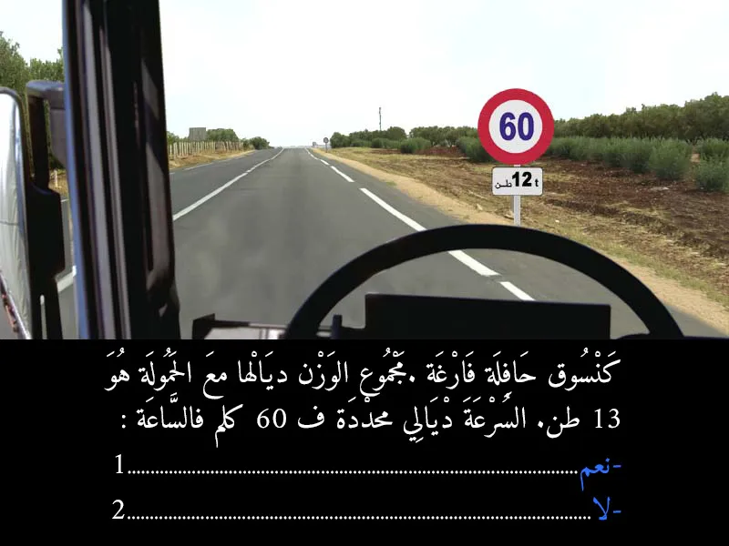
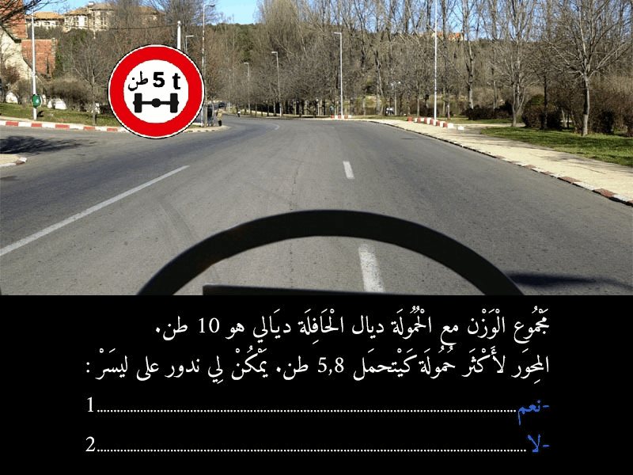
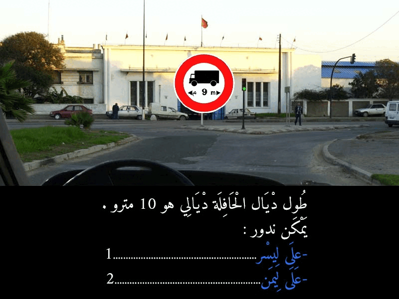
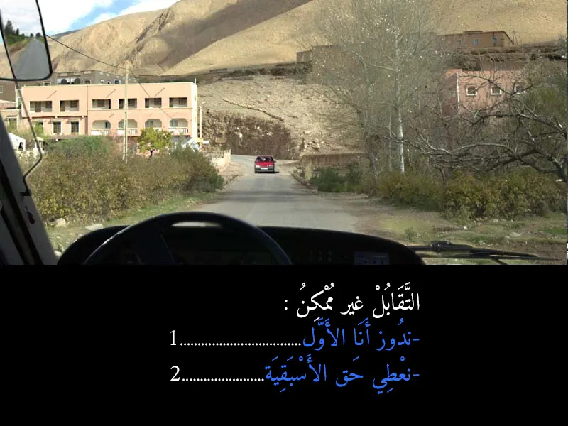
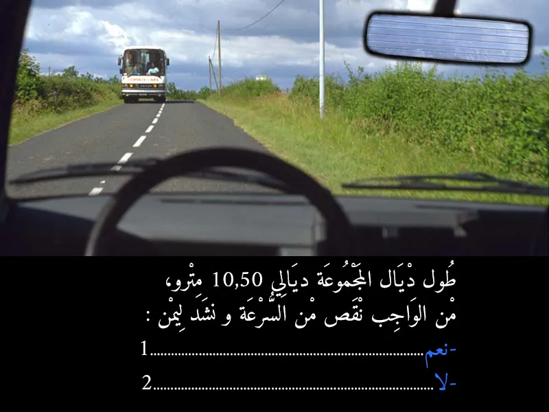
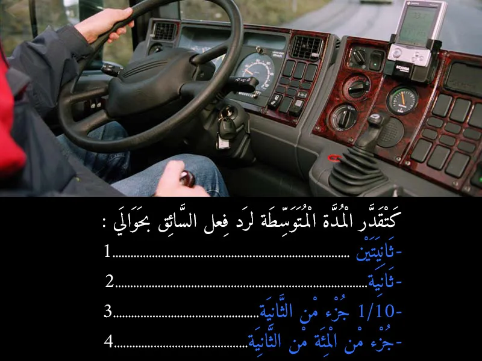

السير بإطارات ممزقة أو بها شقوق يُعتبر مخالفة يعاقب عليها القانون المغربي بشدة، وذلك لخطورتها البالغة على السلامة الطرقية للسائق، والركاب، ومستعملي الطريق الآخرين.
السؤال 2
الجواب الصحيح: 2
علامة تحديد الطول: الصورة تظهر بوضوح علامة تحدد أقصى طول مسموح به للمرور وهو 10 أمتار. 📏 طول الحافلة: السؤال يذكر أن طول الحافلة هو 12 متر. 🚌 المقارنة: 12 متر (طول الحافلة) أكبر من 10 أمتار (الحد الأقصى المسموح به). 🚫 بما أن طول الحافلة يتجاوز الطول الأقصى المسموح به للمرور في هذا الطريق، فإنه ممنوع عليك متابعة السير للأمام. إذا حاولت المرور، فإنك تخاطر بأن تعلق الحافلة أو تتسبب في صعوبة في المناورة في المنعطفات، مما قد يؤدي إلى حوادث أو أضرار.
السؤال 3

الجواب الصحيح: 1
- كَتَعْلَن هَاد العلامة عَلَى أَنَّ السُّرْعَة القصوى مُحَدَّدة ف 60 كيلومتر / ساعة بالنسبة للْمَرْكَبَاتِ اللَّي الْوَزْن الْإِجْمَالِي دْيَالُهَا مُعَ الْحُمُولَة أَكْثَر من الْعَدَدِ الْمُشَارِ إِلَيْهِ فَالْعَلَامَةِ. - الوزن الْإِجْمَالِي دْيَال الحافلة مُعَ الْحُمُولَة 13 طن، أَكْثَر من الْعَدَدِ الْمُشَارِ إِلَيْهِ فَالْعَلَامَةِ لي هو 12 طن ، فهذا يعني أن السرعة غادي تحدد في 60 كلم في الساعة.
السؤال 4

الجواب الصحيح: 2
بما أن وزن المحور الأكثر حمولة في الحافلة (5.8 طن) يتجاوز الحد الأقصى المسموح به (5 طن) حسب العلامة المرورية، فإن الحافلة ممنوعة من الدوران إلى اليسار. العلامة تحدد بوضوح قيدًا على وزن المحور، وحافلتك تتجاوز هذا القيد.
السؤال 5

الجواب الصحيح: 2
علامة المنع الرئيسية: دائرة حمراء بها صورة شاحنة سوداء (تطبق على المركبات الثقيلة بما في ذلك الحافلات)، وبها سهم متجه للجانب مكتوب تحته "9 m". هذه العلامة تعني "ممنوع مرور المركبات أو مجموعات المركبات التي يتجاوز طولها الإجمالي 9 أمتار". 🚫📏
- بما أن طول حافلتك يتجاوز الحد الأقصى المسموح به للدخول إلى الطريق المشار إليه بالعلامة (الذي يقع أمامك أو إلى اليسار)، فلا يمكنك الدوران إلى اليسار. ولكن، يمكنك الدوران إلى اليمين لأن هذا الاتجاه لا يبدو محظورًا بهذه العلامة.
السؤال 6
الجواب الصحيح: 1
علامة "P" الزرقاء: تدل على وجود موقف سيارات.
صورة الحافلة تحت "P": عندما تكون هناك صورة مركبة تحت علامة "P"، فإنها تحدد نوع المركبات التي يُسمح لها بالوقوف في هذا الموقف. في هذه الحالة، الصورة هي لحافلة، مما يعني أن الموقف خاص بالحافلات أو مخصص لوقوفها. 🚍
- إذن، اللافتة تعلم بوجود موقف خاص بالحافلات. 🅿️🚌
السؤال 7
الجواب الصحيح: 2 و 3
هنا، حنا قربنا لسكة ديال التران. واخا الحاجز ديال السكة الحديدية اللي كينزل ويطلع راه طالع الفوق، وهادشي كيعني بلي تقدر دوز، ولكن خاصك ترد البال بزاف. - لا! ما يمكنش ليك تخلي نفس السرعة. هادي بلاصة ديال خطر كبير، وخا يكون كلشي كيبان مزيان. السرعة الزايدة فهاد البلاصة تقدر تسبب كوارث. - ضروري تتأكد بعينيك بجوج جهات ديال السكة واش ما جاي حتى شي تران، وواش ما كاين حتى شي حاجة فالطريق. واخا الحاجز طالع، ديما خاصك تزيد تتأكد قبل ما تدوز. هادي هي السلامة الحقيقية.
السؤال 8

الجواب الصحيح: 2
ملي كتكون الطريق ضيقة بزاف وميمكنش يدوزو جوج طوموبيلات فـ نفس الوقت (التقابل غير ممكن)، القاعدة هي أن المركبة الأكبر حجماً أو الأثقل وزناً هي اللي خاصها تعطي حق الأسبقية للمركبات اللي صغر منها. فالصورة، حنا فـ كاميو، والطوموبيل اللي جاية من قدامنا صغر من الكاميو. لهذا، حنا اللي خاصنا نوقفوا ونعطيوها حق الأسبقية باش دوز هي الأولى.
بالإضافة، في بعض الحالات، العربة اللي هابطة خاصها تعطي حق الأسبقية للعربة اللي طالعة (إلا إذا كانت العربة اللي هابطة هي الأكبر حجماً). في هذه الحالة، الكاميو كيبان طالع شوية في منحدر. لكن القاعدة الأساسية هي حجم ووزن المركبة.
السؤال 9
الجواب الصحيح: 2 و 3
لا يمكنك التوقف في هذا المكان لإنزال أو نقل المسافرين لأنه ممنوع (لوجود علامة وتشوير ممنوع التوقف). ولكن، يجب عليك الاستمرار في السير والالتزام بأقصى اليمين من الطريق كقاعدة عامة للسير.
السؤال 10

الجواب الصحيح: 1
ملي كتكون عربة كبيرة بزاف، خاصك ديما تنقص من السرعة ديالك خصوصاً ملي كيكون شي واحد جاي من قدامك (بحال الكار اللي فـ الصورة). وهادشي كيخليك تتحكم مزيان فالكاميو ديالك، وكتعطي المساحة الكافية باش دوز العربة الأخرى بأمان. وضروري تشد اليمين ديالك باش تخلي الطريق للعربات الأخرى وتتجنب أي خطر ديال التقابل. هادشي كيتعتبر من قواعد السياقة الدفاعية والوقاية من الحوادث.
السؤال 11

الجواب الصحيح: 2
يُعتبر متوسط رد فعل السائق العادي والمنتبه حوالي ثانية واحدة. ⏱️
هذه الثانية الواحدة هي المدة الزمنية اللازمة للسائق:
إدراك الخطر أو الحاجة لاتخاذ قرار (مثلاً، رؤية ضوء الفرامل في السيارة الأمامية). تحليل الموقف واتخاذ قرار (الضغط على الفرامل). تنفيذ القرار (نقل القدم من دواسة الوقود إلى دواسة الفرامل والضغط عليها).